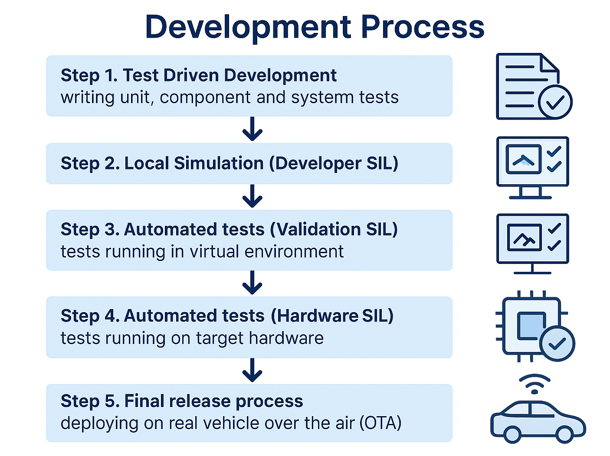
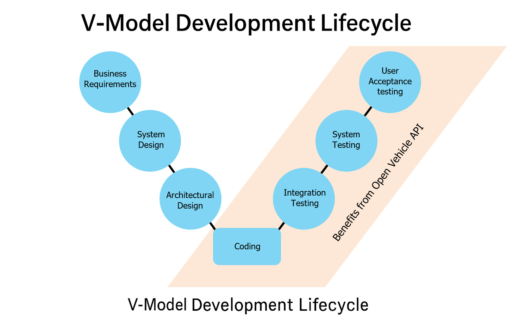

ISO 26262 Compliance and process enhancements#
A major goal of the Open Vehicel API is decreasing the development time including driving function which of course are safety relevant. So the ISO 26262 is a must to be supported.
ISO 26262 is an international standard for functional safety in automotive systems. It ensures that electrical and electronic systems in vehicles are developed with safety in mind — from concept to decommissioning.
Before we start we want to compare 2 different developments to get a common understanding
ECU Compared to Software Development#
The development of an ECU (Electronic Control Unit) differs in several aspects from traditional software development, although both disciplines are increasingly converging. Here is a structured comparison:
🔧 1. Hardware vs. Software Focus#
Aspect |
ECU Development |
Software Development |
|---|---|---|
Focus |
Combination of hardware and software |
Pure software (mostly on standard hardware) |
Dependencies |
Strongly dependent on physical components (sensors, actuators) |
Dependent on operating systems, frameworks, APIs |
🧪 2. Testing and Validation#
Aspect |
ECU Development |
Software Development |
|---|---|---|
Test Methods |
Hardware-in-the-Loop (HiL), simulation, test rigs |
Unit tests, integration tests, CI/CD |
Effort |
Higher effort due to physical testing |
More flexible through virtual setups |
📋 3. Development Processes#
Aspect |
ECU Development |
Software Development |
|---|---|---|
Methodologies |
V-Model, ASPICE, ISO 26262 |
Agile, Scrum, DevOps |
Documentation |
Highly regulated, extensive documentation required |
Varies by industry, often lightweight |
🛡️ 4. Safety Requirements#
Aspect |
ECU Development |
Software Development |
|---|---|---|
Standards |
ISO 26262 (Functional Safety), AUTOSAR |
OWASP, ISO/IEC 27001 (IT Security) |
Criticality |
Life-critical systems (e.g., brakes, airbags) |
Critical depending on application (e.g., banking, medical) |
🔄 5. Update and Maintainability#
Aspect |
ECU Development |
Software Development |
|---|---|---|
Updates |
Increasingly possible via Over-the-Air (OTA), but complex |
Easy via app stores, web deployments |
Lifecycle |
Long-term (10–15 years in vehicles) |
Shorter (often 2–5 years) |
🤝 6. Team Structure and Roles#
Aspect |
ECU Development |
Software Development |
|---|---|---|
Roles |
System engineer, hardware developer, embedded programmer |
Dev, DevOps, UX/UI |
Collaboration |
Interdisciplinary (mechanics, electronics, software) |
Cross-functional |
🧠 Conclusion:#
ECU development is more complex and heavily regulated, as it involves safety-critical systems and hardware integration. There is a big difference to traditional software development as it is more agile and flexible, but also subject to strict regulations in safety-critical domains (e.g., medical technology, finance).
Note
So what we aim for is to get the advantages and flexibility of a general software development process to our ECU development and how Open Vehicle API is supporting this.
Improved ECU Development process#
The ECU development can be heavily improved by splitting it in multiple parts, mainly extracting the software part so that
Parts can be developed and tested independent and in parallel
Parts can be reused
Multiple & different parts can build up different systems to be tested independently, enhancing the test base for automated test dramatically.
Parts can easily be tested in different systems under different environments
The final and still required test to bring a vehicle in series production will be decreased.
Step 1: Local TDD
Step 2: FMU to be used in
OpenXilEnv. To include the vehicle (simulated withIPG CarMakerorCarla) another FMU is required to exchange the signal with this vehicle.Step 3: Run with the sdv component based on
Vector SIL KitStep 4: Run with the sdv component based on
Vector SIL KitStep 5: Run with the sdv component with real CAN socket implementation

Step 1: Test-Driven Development (TDD)
Goal: Ensure quality from the start by writing tests before implementing features.
Activities:
Write unit tests for individual functions or methods.
Create component tests to verify interactions between modules.
Develop system tests to validate end-to-end functionality.
Outcome: A robust test suite that guides development and prevents regressions.
Step 2: Local Simulation (Developer SIL)
Goal: Validate functionality in a controlled, local environment.
Environment: Developer’s machine.
Purpose: Run software in a simulated setup to catch early bugs.
Activities:
Run the software in a Software-in-the-Loop (SIL) simulation on the developer’s machine.
Use mock data or simulated inputs to test behavior.
Outcome: Early detection of logic or integration issues before scaling up.
Step 3: Automated Validation in Virtual Environment (Validation SIL)
Goal: Perform scalable, automated testing.
Environment: Virtualized system.
Purpose: Validate software behavior across multiple scenarios.
Activities:
Run pipeline which includes a virtualized test environment.
Run automated test suites to validate behavior across scenarios.
Benefits: Scalable, repeatable, and fast testing.
Outcome: Confirms software stability and correctness in a simulated system-wide context.
Step 4: Automated Validation on Hardware (Hardware SIL)
Goal: Ensure software works on real hardware.
Environment: Target hardware.
Purpose: Ensure software works correctly on real devices.
Focus: Timing, performance, and hardware integration.
Activities:
Run the same automated tests on target hardware.
Validate timing, performance, and hardware-specific behavior.
Outcome: Confirms software is ready for deployment in real-world conditions.
Step 5: Final Release & Over-the-Air (OTA) Deployment
Goal: Deliver the software to the vehicle fleet.
Activities:
Package and sign the release.
Deploy via Over-the-Air (OTA) updates to vehicles.
Install/Uninstall service/application.
Validate system, undo system changes in case of errors.
Monitor deployment and installation and collect feedback.
Outcome: Software is live in production, ready for use by end users.
ISO 26262 Compliance#
What is ISO 26262?
As mentioned before, ISO 26262 is an international standard for functional safety in automotive systems. It ensures that electrical and electronic systems in vehicles are developed with safety in mind — from concept to decommissioning.

ISO 26262 is closely related to the V-Model in automotive software and system development. Here’s how they connect:
The V-Model is a structured development process that ISO 26262 uses to organize and align safety activities across the lifecycle. Here’s how the phases map:
🔹 Left Side of the V (Development)
Concept Phase → Hazard Analysis and Risk Assessment (HARA)
System Design → Functional Safety Concept
Architectural Design → Technical Safety Requirements
Module Design & Implementation → Software Safety Requirements
🔹 Right Side of the V (Testing & Validation)
Unit Testing → Verifies software components
Integration Testing → Verifies interaction between components
System Testing → Verifies system-level safety requirements
Acceptance Testing → Confirms safety goals are met
Each development phase has a corresponding verification activity, ensuring safety is built in and validated at every step.
The question arises: how can the ‘Open Vehicle API’ increase safety and supporting ISO 26262 while simultaneously reducing development time?”
This will be achieved by
Impact Reduction (smaller components, reusing already tested components)
Increase detection (test single component in multiple systems as test systems will grow over time).
Attention
‘Open Vehicle API’ is not a tool chain. It is a framework with a concept for software development of safety and none safety relevant vehicle functions. It’s aim is to speed up the development process including continuing testing, validation and supporting the V-Model for the ISO 26262.